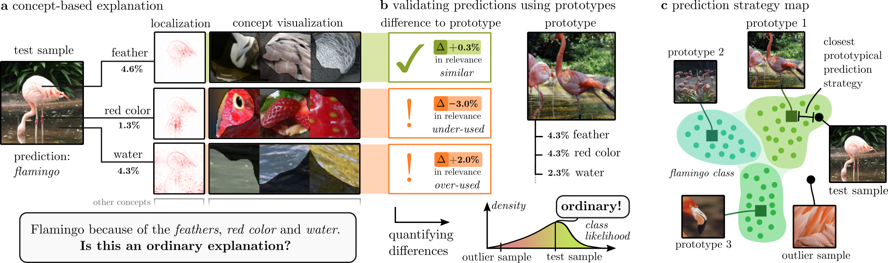
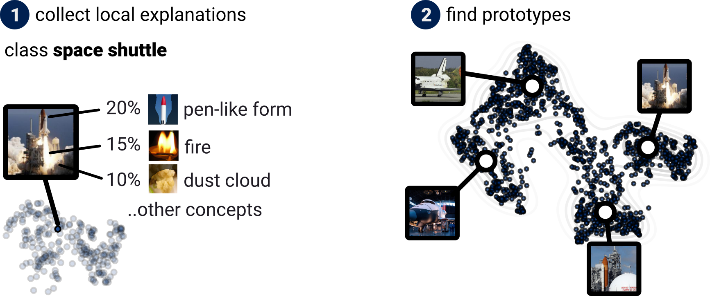
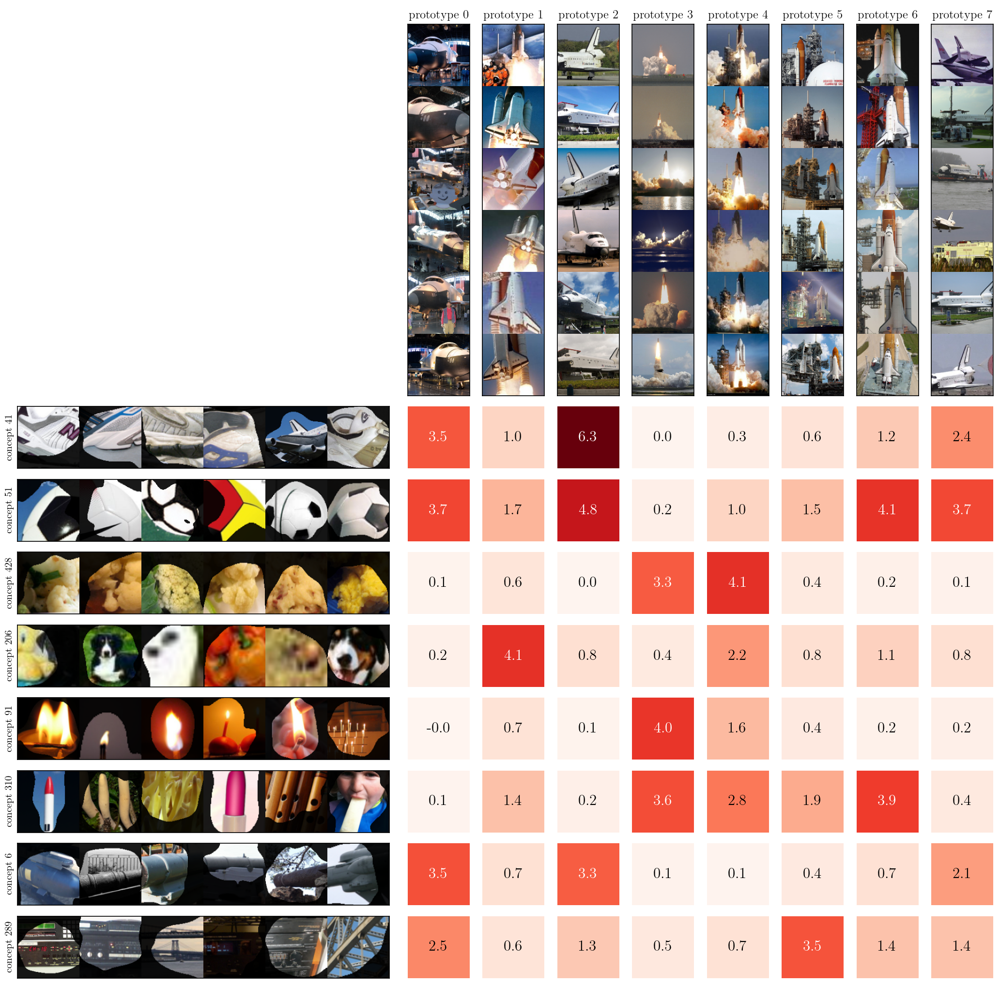

The method of PCX introduces concept-based prototypes that summarize the model behavior in condensed fashion,
enabling an understanding of model (sub-)strategies.
Specifically, with PCX we can
-
(globally) quickly reveal spurious model behavior or data quality issues through prototypes.
-
(globally) understand model (sub-)strategies in detail by comparing prototypes on the concept level.
-
(glocally) validate model predictions qualitatively by studying deviations to prototypes on the concept level.
-
(glocally) validate model predictions quantitatively by measuring deviations from the expected behavior.
As such, PCX is taking important steps towards more objective and applicable XAI.

Fig. 1: (a): A flamingo prediction is based on concepts like “feather”, “red color” and “water”.
While recent concept-based XAI methods provide relevance scores, localization heatmaps,
and visualizations for each concept, it remains unclear whether such composition of used concepts is expected.
(b): Comparing against prototypes enables to understand to what extend concepts are similar (e.g., “feather”),
underused (e.g., “red color”), or overused (e.g., “water”).
These differences can be quantitatively measured to assess the degree of an outlier prediction.
(c): PCX allows to automatically identify outliers, or, alternatively, the closest prototypical prediction strategy.
Prototypes are hereby automatically discovered, summarizing the global model behavior in condensed fashion.
What are Prototypes?
For each data category, one or more prototypes represent a (proto-)typical model prediction strategy.
To give an example,
regarding the flamingo in Fig. 1,
we see prototypes for flamingos standing in water, flamingos in groups, or flamingo heads (Fig. 1c).
For each prototype,
the model uses characteristic concepts, e.g., 'water', 'feathers' and 'red color' for prototype 1.

Fig. 2:
In order to compute prototypes,
we first compute concept-based explanations for the whole training
set of a class we are interested in (here space shuttle class).
Secondly,
we compute and find prototypes on the resulting distributions by fitting a Gaussian Mixture Model.
In this example,
we find four prototypes showing space shuttles in different settings (in a hall, landing, ready for take-off, taking off).
Each prototype is characterized by specific concepts, as shown in detail later in Fig. 5.
In order to compute prototypes,
we first collect concept-based explanations over the training set, as illustrated in Fig. 2.
For each sample and model prediction outcome,
we leverage the
CRP
method to compute relevance scores for all concepts (one concept per latent unit/neuron).
Having collected the concept-based explanations,
we propose to fit a Gaussian Mixture Model on the resulting distributions for each output class.
Then,
each Gaussian describes one prototype. In order to visualize a prototype,
we usually show the closest samples to a Gaussian's mean in the training set.
Revealing Spurious Model Behavior and Data Quality Issues
PCX provides protoypes for each output category that summarize the model behavior in condensed fashion.
When computing prototypes on the training data,
PCX prototypes then allow to quickly understand model and data.
In the following,
we show two examples for a VGG-16 model trained on the
ImageNet dataset that consists of over one million
data points and 1000 object classes.
Fig. 3: Eight prototypes for the carton class:
Prototype 7 reveals that cats and cartons are correlating in the dataset.
Further,
prototypes 4 and 5 consist of a Chinese lettering watermark that is overlayed in white color over images.
We show more examples in the appendix of our paper.
The first example is depicted in Fig. 3,
where eight prototypes for the class 'carton' are shown.
For each prototype, we show six example image samples that are most representative of the prototype.
Here,
prototype 7
is special,
as it shows cats in cartons, indicating a correlation between cats and cartons.
In fact,
the most relevant characteristic concept for prototype 7 is related to cat features (shown in the paper).
Further,
prototypes 4 and 5 reveal a watermark of Chinese lettering (overlayed in white color over the images).
Fig. 4: Eight prototypes for the lynx and catamount class:
Prototype 0 reveals that lynx and fences are correlating in the dataset.
Further,
prototype 5 depicts Blue Lynx Ragdoll cats that are mistakenly included in the dataset.
We show more examples in the appendix of our paper.
The second example is depicted in Fig. 5,
where eight prototypes for the class 'lynx, catamount' are shown.
Here,
prototype 0
is special,
as it shows lynxes behind fences, indicating a correlation in the dataset.
In fact,
the most relevant characteristic concept for prototype 5 is related to the fence (shown in the paper).
Further,
prototypes 5 stands out by not showing lynxes or catamount cats, but Blue Lynx Ragdoll house cats that are mistakenly
included in the dataset.
This example underlines the danger of using large datasets that are automatically scraped from the internet.
Note,
that we provide more such examples in the appendix of our paper.
Model Sub-Strategies in Detail
By looking at the prototype visualizations of PCX prototypes,
we get a quick and rough idea of what the model has learned.
As our prototypes are based on concept relevance score distributions,
we can now dive deeper and study the characteristic concepts of each prototype.

Fig. 5: Going to the concept level,
we can understand the prototypes (and their differences) in more detail.
For the eight prototypes of the space shuttle class, we also show eight characteristic concepts
and their respecitve relevance scores (in %).
There are, e.g., concepts corresponding to the white-black Orbiter Vehicle (as dominant for prototypes 0, 2 and 7).
Further,
a concept for dust clouds (concept 428) or low resolution (concept 206) exists.
An example is shown in Fig. 5 for the space shuttle class of the ImageNet dataset.
Here,
you can find eight PCX prototypes (including the four prototypes of Fig. 2).
Additionally,
we show the eight overall most relevant concepts for the class prototypes,
and the respective relevance scores for each prototype in form of a matrix.
In the matrix,
each value describes how relevant a concept is (in percent).
Going to the concept level,
we can now understand the prototypes and their differences in detail.
Regarding prototypes 3 and 4 for example,
the dust cloud and vertical pen-like form is important.
Whereas the fire concept is more important for prototype 3,
prototype 4 is more strongly characterized by a 'blurry/pixelated' concept, as the prototype shows more zoomed-in versions
of space shuttles.
Validating Model Predictions
Lastly,
we want to highlight how PCX allows for more objective explanations that are also practical for model (prediction)
validation.
Concretely,
with PCX,
we can understand for single predictions,
how (a-)typical they are.
On the one hand,
PCX allows to study the difference to the expected model behavior qualitatively in terms of concepts.
On the other hand,
as prototypes are based on Gaussian distributions,
the probability density function of a distribution allows for a quantitative likelihood measure.
The idea is further illustrated in Fig. 6.
Fig. 6:
PCX allows for more objective explanations that are practical for model (prediction) validation.
Specifically,
we can understand for a new prediction how it deviates from the expected (prototype) in terms of concepts.
Further,
being based on Gaussian Mixture Models, we further can compute quantitatively the likelihood that a prediction
belongs to an output category.
Detailed examples are provided in the appendix of the paper.
Questions?
Feel free to
reach out when you have questions about our work or want to collaborate!
Want to use PCX for your project? Feel free to cite us:
Dreyer, Maximilian, et al. "Understanding the (Extra-) Ordinary: Validating Deep Model Decisions with Prototypical Concept-based Explanations." arXiv preprint arXiv:2311.16681 (2023).
@article{dreyer2023understanding,
title={Understanding the (Extra-)Ordinary: Validating Deep Model Decisions with Prototypical Concept-based Explanations},
author={Dreyer, Maximilian and Achtibat, Reduan and Samek, Wojciech and Lapuschkin, Sebastian},
journal={arXiv preprint arXiv:2311.16681},
year={2023}
}